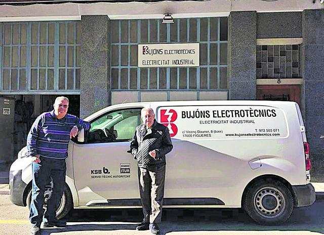
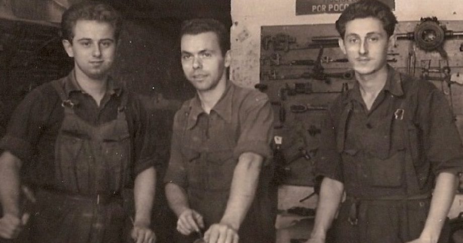
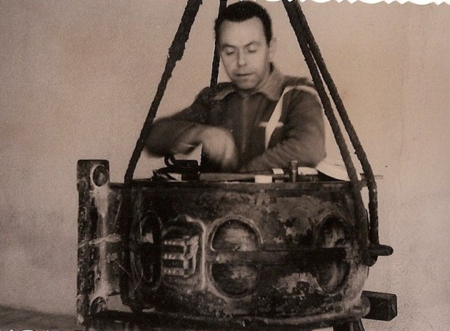
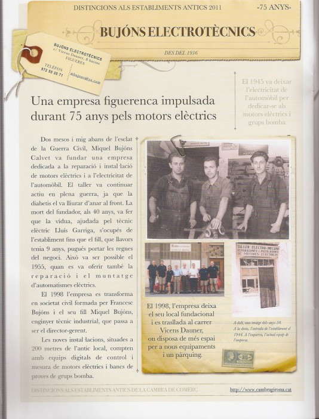

Empresa
El nostre equip i la nostra història
El nostre equip
Els nostres projectes es duen a terme amb equips multidisciplinaris i, quan cal, amb la col·laboració d'investigadors externs de reconegut prestigi. Aquesta combinació ens permet abordar cada repte amb una mirada integral i orientada a resultats.
A BUJÓNS ELECTROTÈCNICS S.L. comptem amb professionals competents, compromesos i experimentats, formats en les últimes tecnologies i procediments de qualitat. Compartim una cultura de feina clara: rigor tècnic, seguretat, i proximitat amb el client.
Al capdavant de l'empresa hi ha Miquel Bujóns Bach, enginyer tècnic industrial i director gerent, que impulsa l'evolució contínua de l'organització i la seva vocació de servei.


La nostra història
L'empresa va ser fundada l'any 1936 pel Sr. Miquel Bujóns Calvet, centrant-se en la reparació i instal·lació de motors elèctrics i en la part elèctrica de l'automòbil. El taller es va situar a la històrica Plaça d'Anselm Clavé —avui Plaça Triangular— i va romandre actiu durant tots els anys de la Guerra Civil.
A partir de 1945, es deixa l'elèctrica de l'automòbil per dedicar-se plenament a la reparació i muntatge de motors elèctrics i grups bomba, sota la direcció de Francesc Bujóns.
Transformació i creixement
L'any 1998 l'empresa es transforma en Societat Civil, formada per Francesc Bujóns i el seu fill Miquel Bujóns Bach (Enginyer Tècnic Industrial), assumint aquest darrer el càrrec de director gerent.
Paral·lelament, es produeix el trasllat a un local propi al Carrer Vicenç Dauner, a escassos 200 metres de l'anterior ubicació. El nou espai, més ampli, incorpora equips digitals de control i mesura per a motors i un banc de proves molt complet per a grups bomba.

Consolidació i especialització
Al llarg dels anys, ampliem capacitats i serveis per donar resposta a les necessitats de la indústria: estudis de racionalització de consums i compensació de reactiva, projectes elèctrics, instal·lacions industrials, i reparació i muntatge d'equips electrònics industrials.
Finalment, l'any 2007 l'empresa es transforma en Societat Limitada i consolida la seva trajectòria sota la denominació amb què se'ns coneix avui: BUJÓNS ELECTROTÈCNICS S.L.
